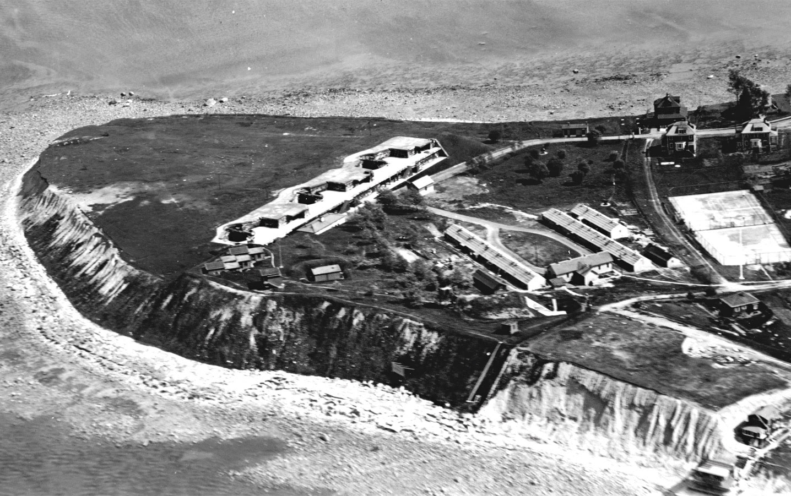
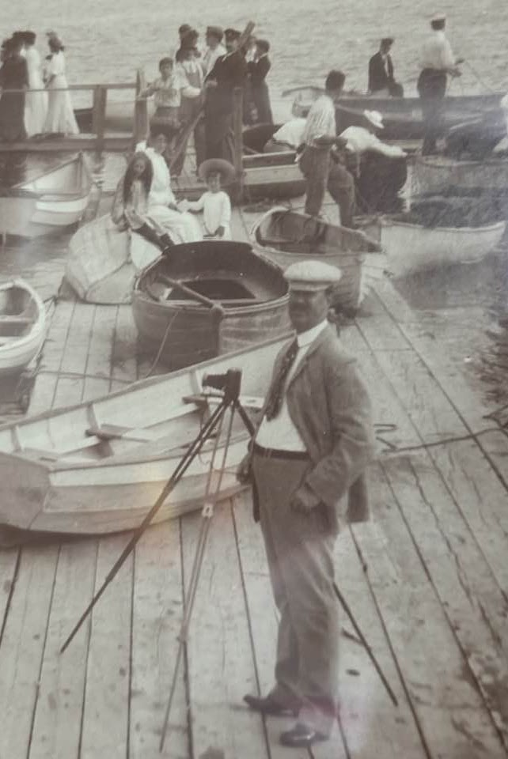
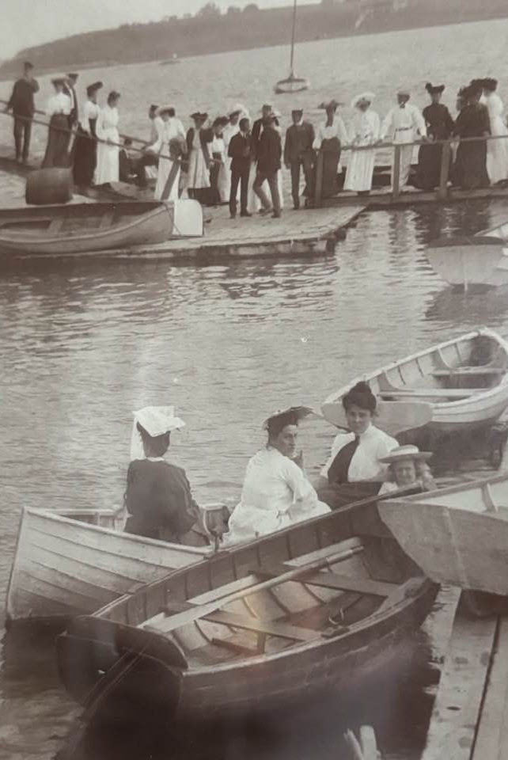
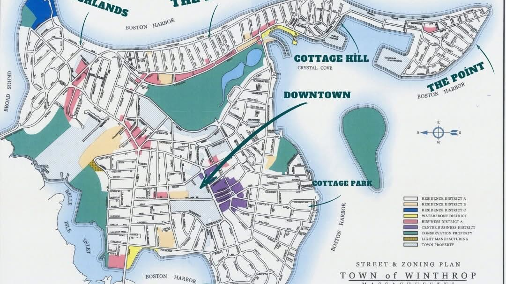
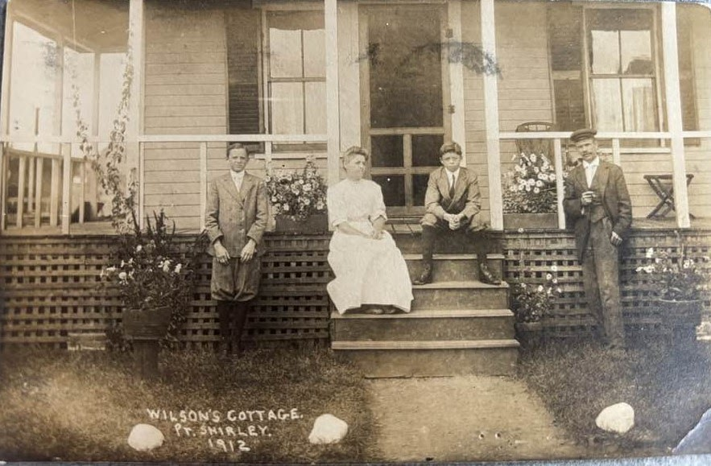
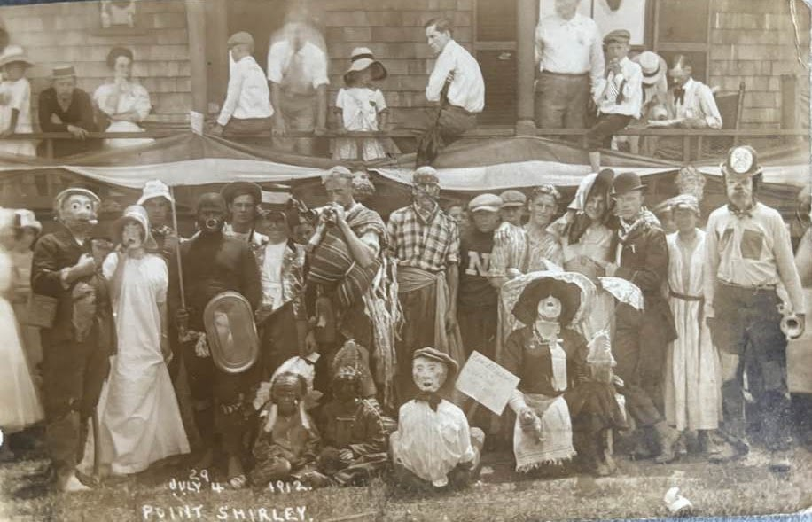
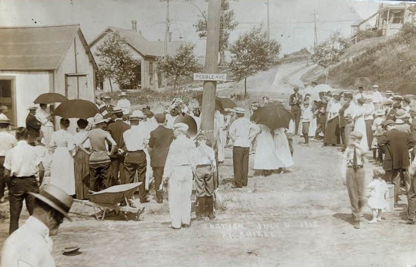
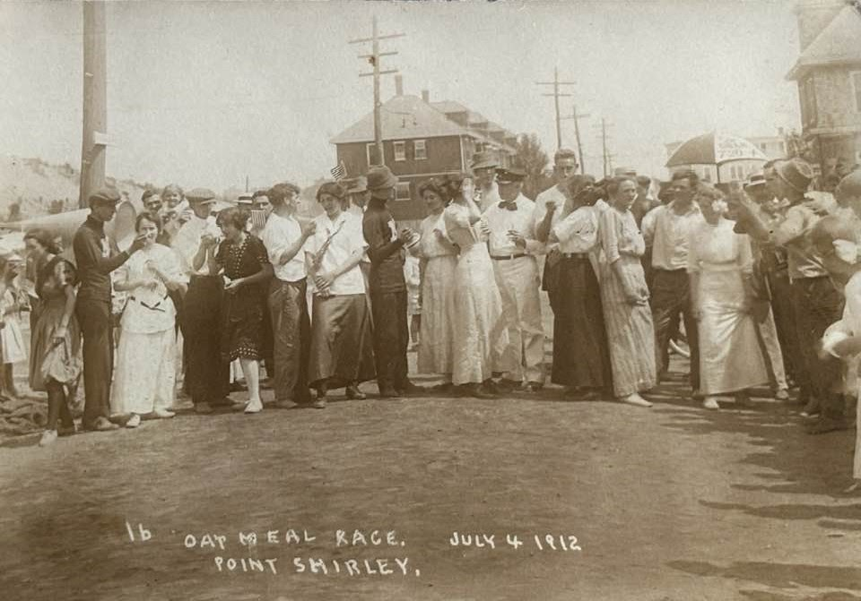
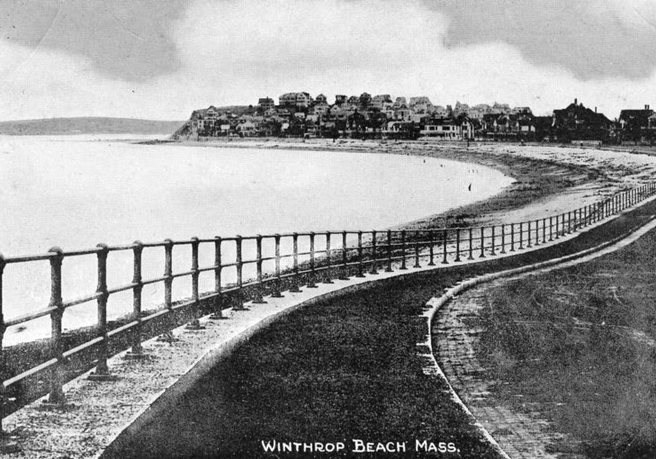
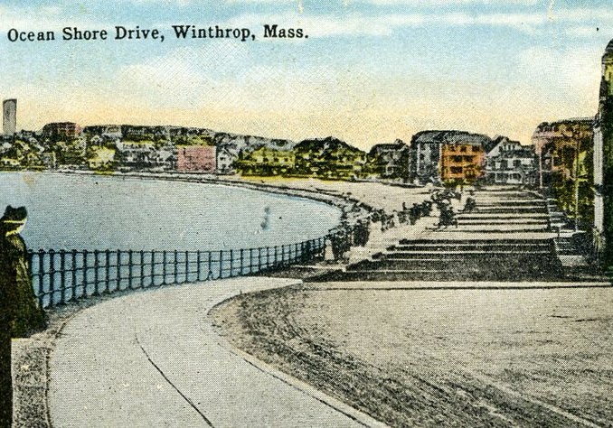

Point Shirley
Sunrise views, beaches, and island-like cottages.
A little history
How a windswept point of land called Pullen Point ended up at the heart of a nation's founding.
Where you're staying
Our house is located in the highland area of Winthrop. It is a Victorian house built in 1906.

Origins
A story at the heart of a nation's birth.
The town's origins trace back to colonial America. It was originally called Pullen Point — named for the demanding tidal conditions here, which required some hard pulling from boatmen. In time the area became associated with Deane Winthrop, son of Governor John Winthrop.
Governor John Winthrop left England in 1630 aboard the Arbella with his Puritan followers. Their first settlement at Charlestown proved unsuitable — there simply wasn't enough fresh water. Reverend William Blackstone, at the time the only European living on the Shawmut Peninsula, invited them across to his land, which had an abundant, life-giving spring.
That move led to the founding of Boston at Dock Square — and became foundational to American history.


Winthrop at the turn of the century.
Know the town
Winthrop is small, but every corner of it has its own character.

Sunrise views, beaches, and island-like cottages.
Panoramic views of the Boston skyline and the harbor, with spacious lots. This is where you're staying.
Harbor-side, with yacht clubs and views across to the airport.
The heartbeat of our town — local businesses and restaurants.
Home of "the Five Sisters" rock formations and classic New England coastal character.
From the archives
A remarkable set of photographs from the Fourth of July celebrations at Point Shirley — costumes, street games, and an oatmeal race.






Want to see more? Historic Winthrop photographs are available via winthropmemorials.org.